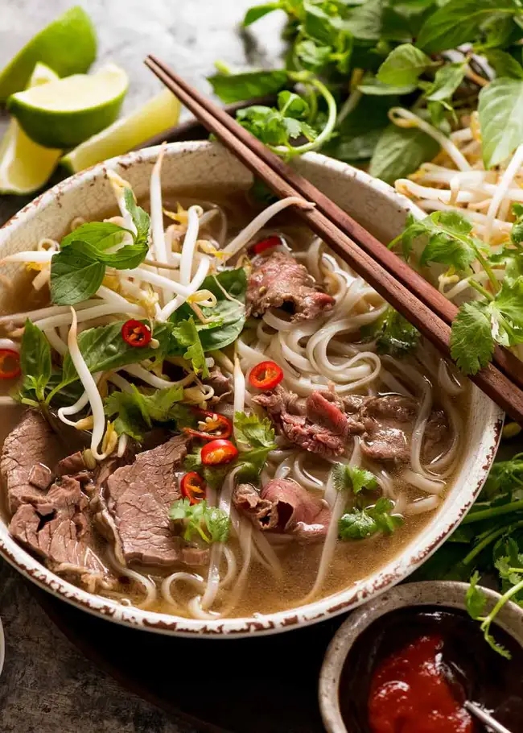

Beef Pho

Ingredients
- 1 medium yellow onion, quartered, divided
- 14.5 can low sodium beef broth
- 14.5 can low sodium chicken broth
- 2 cups water
- 1 tablespoon fish suace
- 1 piece fresh ginger, thinly sliced
- 1 cinnamon stick
- 2 teaspoon sugar
- 1 star anise pod
- 4 whole cloves
- 7 oz flat rice noodles
- 8 oz thinly sliced beef
- 1/2 cup bean sprouts
- 1/4 cup chopped fresh cilantro leaves
- lime wedges for serving
- hoisin sauce and sriracha for serving